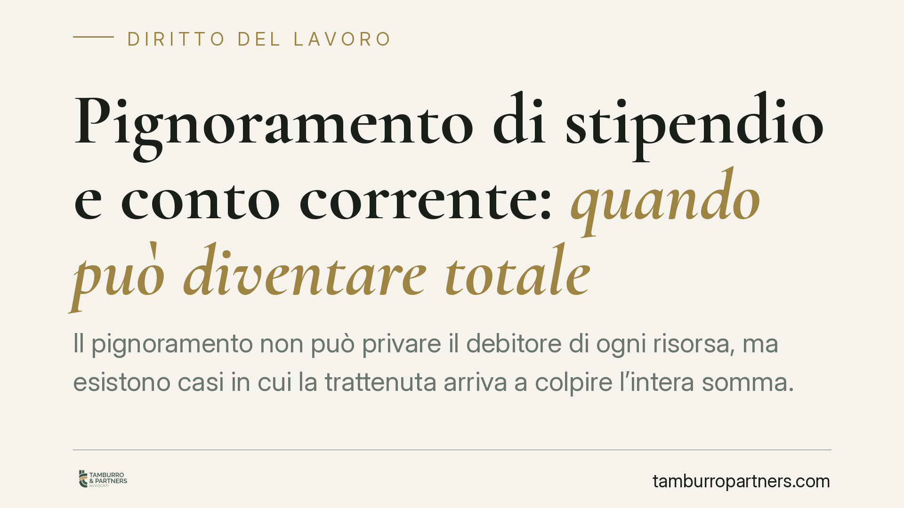

Pignoramento di stipendio e conto corrente: quando può diventare totale
Il pignoramento non può privare il debitore di ogni risorsa, ma esistono casi in cui la trattenuta arriva a colpire l'intera somma. Comprendere i limiti fissati dal Codice di procedura civile e le regole diverse per dipendenti, pensionati e autonomi è decisivo per difendere il minimo vitale e reagire con gli strumenti corretti.

Il quadro: perché il pignoramento non è mai davvero illimitato
Quando un creditore ottiene un titolo esecutivo può aggredire lo stipendio, la pensione o il conto corrente del debitore. La legge, però, non consente di prosciugare integralmente queste fonti: l'obiettivo è garantire il soddisfacimento del credito senza compromettere la sopravvivenza economica di chi subisce l'esecuzione.
Il principio cardine è la tutela del cosiddetto minimo vitale. Ma la portata di questa tutela cambia in base alla natura della somma pignorata e alla qualifica del debitore. In alcuni casi, come vedremo, la trattenuta può risultare talmente ampia da apparire "totale".
Inquadramento normativo
La disciplina generale è nell'art. 545 c.p.c., che fissa i limiti di pignorabilità di stipendi e pensioni. Le somme dovute a titolo di retribuzione o pensione sono pignorabili, di regola, nella misura di un quinto per i crediti ordinari. Il quinto può cumularsi con altre trattenute (ad esempio per alimenti o per crediti tributari), fino a raggiungere la metà dell'importo nei casi previsti dalla norma.
Per la pensione opera una protezione ulteriore: è impignorabile la parte pari al doppio dell'assegno sociale; solo l'eccedenza può essere aggredita, e comunque nel limite del quinto.
Quando a procedere è l'Agenzia delle Entrate-Riscossione, si applica l'art. 72-ter del d.p.r. 602/1973, che gradua la trattenuta in base all'importo dello stipendio: un decimo fino a 2.500 euro mensili, un settimo tra 2.500 e 5.000 euro, un quinto oltre tale soglia.
Sul conto corrente incide invece il d.l. 83/2015: le somme accreditate a titolo di stipendio o pensione già presenti sul conto alla data del pignoramento sono impignorabili per la parte eccedente il triplo dell'assegno sociale. Gli accrediti successivi, però, restano soggetti ai limiti ordinari dell'art. 545 c.p.c.
Implicazioni pratiche: quando la trattenuta diventa "totale"
Il termine "totale" va inteso in senso concreto, non letterale. Vi sono situazioni in cui il debitore si trova senza liquidità disponibile:
Cumulo di pignoramenti. Se convivono più titoli — ad esempio un credito alimentare e un credito ordinario — le trattenute si sommano fino a metà dello stipendio. La disponibilità residua si riduce drasticamente.
Lavoratori autonomi. Chi non percepisce uno stipendio ma incassa compensi direttamente sul conto non gode dei limiti del quinto pensati per la retribuzione. I compensi professionali accreditati non sono "stipendio" in senso tecnico: possono quindi essere pignorati integralmente, salvo le tutele generali sul minimo vitale via via riconosciute da diversi Tribunali (tra gli altri Firenze, Teramo, Pisa, Cosenza).
Somme non qualificabili come retribuzione. Bonus, arretrati o accrediti di natura incerta rischiano di essere trattati come giacenze ordinarie, aggredibili senza il beneficio del quinto.
Confusione tra retribuzione e risparmio. Se sullo stesso conto confluiscono stipendio e altre entrate, distinguere ciò che è protetto da ciò che non lo è diventa complesso. Un difetto di documentazione può tradursi nel pignoramento dell'intera giacenza.
La giurisprudenza, anche costituzionale, ha più volte richiamato l'esigenza di garantire un minimo esistenziale, ma la protezione non opera in modo automatico: va fatta valere nel giudizio di esecuzione.
Cosa fare in concreto
- Verificate la natura di ogni accredito. Distinguete stipendio o pensione dalle altre entrate: solo le prime godono dei limiti dell'art. 545 c.p.c. e delle tutele sul conto.
- Controllate se le trattenute rispettano i tetti di legge. Sommate eventuali pignoramenti concorrenti e confrontate il totale con i limiti del quinto o della metà.
- Documentate la provenienza delle somme. Buste paga, cedolini pensione e contabili di accredito sono essenziali per rivendicare l'impignorabilità.
- Reagite nei termini con l'opposizione. Consigliamo di valutare tempestivamente un'opposizione all'esecuzione o agli atti esecutivi quando la trattenuta supera i limiti previsti.
- Se siete lavoratori autonomi, richiedete la tutela del minimo vitale. L'assenza di limiti automatici non esclude la protezione: va però argomentata davanti al giudice dell'esecuzione.
Disclaimer
Contributo informativo a cura di Tamburro & Partners - Avv. Giuseppe Tamburro. Non costituisce parere legale.
Ogni storia di lavoro ha i suoi tempi.
Se gestisci HR e vuoi un confronto su contenzioso, ispezioni o licenziamenti, scrivi allo studio. Ti rispondiamo entro un giorno lavorativo.